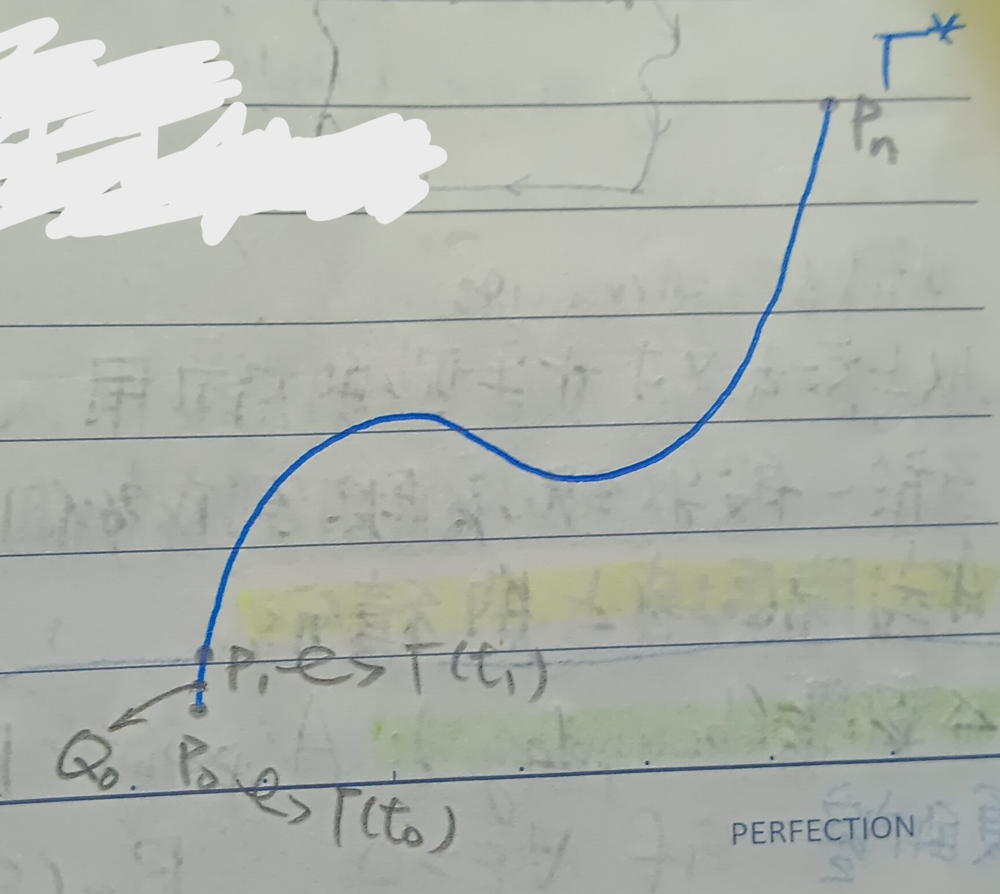

這份筆記是關於曲線的性質與線積分。
曲線
定義 1：曲線的參數式 (Parametrized Curve)
通常這裡對平面曲線的描述會用參數式，即 \[ \left\{ \begin{aligned} x&=x(t)\\ y&=y(t) \end{aligned} \right. , t\in[\alpha,\beta] \] 類似的，對空間中的曲線我們也可以令 \[ \Gamma=\left\{ \begin{aligned} x&=x(t)\\ y&=y(t)\\ z&=z(t) \end{aligned} \right. \]
註記 2：曲線的弧長 (Length of a Curve)
把\([\alpha,\beta]\)分成\(n\)小段，並令點\(P_i=(x(t_i),y(t_i))\)(見下圖1)。
則令 \[ S_n=\sum_{i=0}^{n-1}\overline{P_iP_{i+1}}=\sum_{i=0}^{n-1}\sqrt{(x(t_{i+1})-x(t_i))^2+(y(t_{i+1})-y(t_i))^2} \] (用折線逼近曲線)若\(x(t),y(t)\)有連續的導數，則當\(n\to\infty\)時 \[ \begin{aligned} &\sum_{i=0}^{n-1}\sqrt{(x(t_{i+1})-x(t_i))^2+(y(t_{i+1})-y(t_i))^2}\\ =&\sum_{i=0}^{n-1}\sqrt{(x'(\tilde{t_i})\Delta t_i)^2+(y'(\tilde{t_i})\Delta t_i)^2}\\ &\mbox{(微分均值定理)}\\ =&\int_\alpha^\beta\sqrt{x'(t)^2+y'(t)^2}dt \end{aligned} \] 或寫做 \[ \int_\alpha^\beta\sqrt{\dot{x}^2+\dot{y}^2}dt \] 但這裡要注意從\([\alpha,\beta]\)到曲線的映射要是一對一的，不然像一個圓，既可表成 \[ \left\{ \begin{aligned} x&=\cos t\\ y&=\sin t \end{aligned} \right. ,t\in[0,2\pi] \] 這樣會算出對的弧長。但又可表成 \[ \left\{ \begin{aligned} x&=\cos 2t\\ y&=\sin 2t \end{aligned} \right. ,t\in[0,2\pi] \] 這樣會算出兩倍弧長，這是因為下面那個參數式實際上繞了兩圈。
定義 3：沿曲線的速度 (Speed along the Curve)
假定\(\dot{x}^2+\dot{y}^2\neq 0\)，令 \[ s=\int_\alpha^\beta\sqrt{\dot{x}^2+\dot{y}^2}dt \] 則 \[ \frac{ds}{dt}=\sqrt{\dot{x}^2+\dot{y}^2} \] 顯然\(\frac{ds}{dt}\)的意思就是速度，我們將其稱為沿曲線的速度。
註記 3-1
我們有 \[ \frac{dx}{ds}=\frac{dx}{dt}\cdot\frac{dt}{ds}=\frac{\dot{x}}{\sqrt{\dot{x}^2+\dot{y}^2}} \] 可以看出這是速度(切線)的\(x\)分量。同理 \[ \frac{dy}{ds}=\frac{\dot{y}}{\sqrt{\dot{x}^2+\dot{y}^2}} \] 這是速度(切線)的\(y\)分量。
定義 4：曲率 (Curvature)
我們將一條曲線的曲率定義為\(k=\frac{d\alpha}{ds}\)，其中\(\alpha\)是切線與水平軸的夾角。假設\(\dot{x}\neq 0\)，考慮 \[ \tan\alpha=\frac{\dot{y}}{\dot{x}} \] (如果\(\dot{x}=0\)則考慮\(\cot\alpha=\dot{x}/\dot{y}\))，則 \[ k=\frac{d\alpha}{ds}=\frac{d\alpha/dt}{ds/dt}=\frac{\dot{x}\ddot{y}-\ddot{x}\dot{y}}{\left(\dot{x}^2+\dot{y}^2\right)^{3/2}} \] (計算略)
線性微分形式
定義 5：線性微分形式 (Linear Differential Form)
給定\(u=f(x,y,z)\)，則令\(u\)的線性微分形式為 \[ u=f_xdx+f_ydy+f_zdz \] (線性的意思是\(l(ax+y)=al(x)+l(y)\))，於是 \[ \frac{du}{dt}=f_x\frac{dx}{dt}+f_y\frac{dy}{dt}+f_z\frac{dz}{dt} \]
定義 5-1：廣義線性微分形式 (Generalized Linear Differential Form)
寫做 \[ A(x,y,z)dx+B(x,y,z)dy+C(x,y,z)dz \] 其中\(A,B,C\)是隨便的函數。
定義 5-2：正合 (Exact)
給定廣義線性微分形式\(L\)，我們說\(L\)是正合的，若存在\(f\)使得\(L=df\)。
註記 5-2-1
令\(L=A(x,y,z)dx+B(x,y,z)dy+C(x,y,z)dz\)，則若
\[
\frac{\partial B}{\partial z}-\frac{\partial C}{\partial y}=0
, \frac{\partial C}{\partial x}-\frac{\partial A}{\partial z}=0,
\frac{\partial A}{\partial y}-\frac{\partial B}{\partial x}=0
\] 則\(L\)是正合的。
證明：對比一下符號再用偏微分的可交換性就有了。QED
線積分
定義 6：曲線的定向 (Orientation of a Curve)
考慮空間曲線 \[ \Gamma=\left\{ \begin{aligned} x&=x(t)\\ y&=y(t)\\ z&=z(t) \end{aligned} \right. \] 我們將\(\Gamma\)的方向定為\(t\)遞增的方向(這種有定向的曲線記為\(\Gamma^*\)，並且將另一個方向記為\(-\Gamma^*\))。
定義 7：曲線的端點 (Endpoints of a Curve)
意思是\(t\)的區間端點對應的曲線上的點。
例 7-1
對於\(\Gamma=\Gamma(t), a\leq t\leq b\)來說，\(\Gamma\)的端點是\(\Gamma(a)\)和\(\Gamma(b)\)。
定義 8：曲線的切割 (Partition of a Curve)
給定定向曲線\(\Gamma^*\)，則可以把它切成很多小定向弧\(\Gamma_1^*,\Gamma_2^*,\cdots,\Gamma_n^*\)，並且記為 \[ \Gamma_1^*+\Gamma_2^*+\cdots+\Gamma_n^*=\Gamma^* \]
註記 9：線積分 (Line Integral)
我們這裡關心的是一個線性微分形式\(L=A(x,y,z)dx+B(x,y,z)dy+C(x,y,z)dz\)在簡單定向曲線\(\Gamma^*\)上的積分(簡單的意思是\(\Gamma^*\)是一對一的，即不自相交)。首先，把\(\Gamma^*\)分成很多段，端點為\(P_0,P_1,\cdots,P_n\)(見下圖2)。
又，令\(Q_k\)是\([P_{k-1},P_k]\)上的某一點，而\(A_k, B_k, C_k\)分別是\(A,B,C\)在\(Q_k\)上的值。而令 \[ \begin{aligned} \Delta x_k&=x(t_k)-x(t_{k-1})\\ \Delta y_k&=y(t_k)-y(t_{k-1})\\ \Delta z_k&=z(t_k)-z(t_{k-1}) \end{aligned} \] 考慮 \[ F_n=\sum_{k=1}^n(A_k\Delta x_k+B_k\Delta y_k+C_k\Delta z_k) \] 而由微分均值定理，有 \[ \begin{aligned} x(t_k)-x(t_{k-1})&=x'(\theta_{k,x})\Delta t_k\\ y(t_k)-y(t_{k-1})&=y'(\theta_{k,y})\Delta t_k\\ z(t_k)-z(t_{k-1})&=z'(\theta_{k,z})\Delta t_k \end{aligned} \] 於是和單變數時的情況一樣(這裡的定理1-3)，當\(n\to\infty\)時，\(F_n\)收斂。則記 \[ \int_{\Gamma^*}L=\lim_{n\to\infty}F_n=\int_a^b\left(A\frac{dx}{dt}+B\frac{dy}{dt}+C\frac{dz}{dt}\right)dt \]
封閉環路上的線積分
定義 10：封閉 (Closed)
若曲線的兩端點是同一點，則稱該曲線封閉。
定理 11
考慮平面上如下圖3的封閉曲線 \[ c=\left\{ \begin{aligned} x&=x(t)\\ y&=y(t) \end{aligned} \right. , t\in[\alpha,\beta] \]
令\(A\)為該曲線所圍的面積，則 \[ \frac{1}{2}\int_\alpha^\beta(xy'-yx')dt=A \]
證明：由分部積分有 \[ \int_\alpha^\beta xy'dt=-\int_\alpha^\beta yx'dt \] 我們將\(-\int_\alpha^\beta yx'dt\)記做\(-\int_c ydx\)。把\(c\)切成很多段，有 \[ \int_c ydx=\int_{c_1}ydx+\int_{c_2}ydx+\cdots+\int_{c_n}ydx \] 考慮一個曲線\(c=c_1+c_2+c_3+c_4\)，其中\(c_1=g(x)\), \(c_2=f(x)\)，\(c_2\)和\(c_4\)是垂直線(見下圖4)。
令\(A_c=-\int_c ydx\)，則\(A_c=A_{c_1}+A_{c_2}+A_{c_3}+A_{c_4}\)。顯然\(A_{c_2}=A_{c_4}=0\)，則 \[ \begin{aligned} A_{c_1}+A_{c_3}&=-\int_a^b g(x)dx-\int_a^b f(x)dx\\ &=\int_a^b(g(x)-f(x))dx\\ &=A \end{aligned} \] 而以上方法對如下圖5中水平型的區域也適用。
至於在一般狀況中的話，我們可以把區域切割成多個水平型或垂直型區域就好。QED